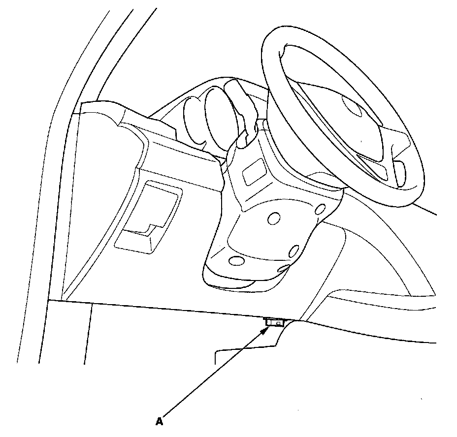
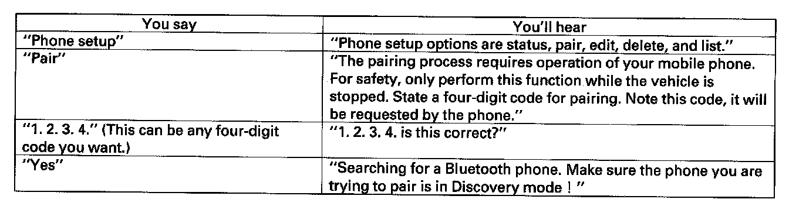

Description of On-Board Diagnostics
General Troubleshooting InformationHow to Check for DTCs with the HDS
1. Make sure the ignition switch is OFF.

2. Connect the HDS to the data link connector (DLC) (A) located under the driver's side of the dashboard.
3. Turn the ignition switch ON (II).
4. Make sure the HDS communicates with the vehicle and the HandsFreeLink control unit. If it doesn't, troubleshoot the DLC circuit.
5. Select HandsFreeLink in the BODY ELECTRICAL menu.
6. Select DTCs in the HandsFreeLink menu.
7. Check for DTCs. If any DTCs are indicated, write down the DTCs, then go to the indicated DTC troubleshooting. If no DTCs are indicated, refer to symptom troubleshooting Symptom Troubleshooting Index.
NOTE:
- After troubleshooting, clear the DTCs with the HDS.
- For specific operations, refer to the user's manual that came with the HDS.
General Operation
The HandsFreeLink (HFL) works only with an approved Bluetooth enabled cell phones with the Hands Free Profile. If you are not sure if your cell phone is compatible with the HFL - and not all phones are - Acura has a dedicated call center and web-site to answer your questions. On the web, go to www.handsfreelink.com, or dial 888-528-7876 for further assistance. The call center is open Monday thru Friday from 6:00 a.m. to 6:00 p.m. CST, Saturday from 7:00 a.m. to 6:00 p.m. CST, and Sunday from 8:00 a.m. to 6:00 p.m. CST.
The HFL gives the user the convenience of hands-free operation. It can't control the phone's performance (call quality and signal strength). To avoid performance problems, don't put the phone in a metal briefcase or in a purse under the seat.
This guide shows you just a few of the HFL's many features. You will see how to pair your phone to the HFL and then make and receive calls, all using simple voice commands. If you want a complete description of this system, please refer to the owner's manual and quick start guide.
Voice Control Tips
To give any voice command, press and release the TALK button. Always wait for the beep, then give your command in a clear, natural voice. The HFL microphone is on the ceiling, by the front spotlights.
If the HFL doesn't recognize your voice command, you'll hear "Pardon." If after repeating your command, it still doesn't recognize it, you'll hear "Please repeat." If after repeating your command again, it still doesn't recognize it, the HFL sends you to the Help menu.
To hear a list of available options at any time, say "Hands free help."
You can give many voice commands together. For example, you can say "Dial 123-456-7890."
To give a string of numbers in a call or dial voice command, you can say them all at once, or separate them into blocks of 3, 4, 7, 10, or 11.
To skip a voice prompt, press and release the TALK button while the HFL is speaking. The HFL begins listening for your next voice command.
To go back a step in a voice command sequence, press and release the Back button, or say "Go back."
If you don't say anything while the HFL is listening for your voice command, it will time out and stop its voice recognition. The next time you press and release the TALK button, the HFL begins listening from the point where it timed out.
To stop a voice command sequence at anytime, press and hold the Back button, or press and release the TALK button, wait for the beep, and say "Cancel." The next time you press and release the TALK button, the HFL begins from its main menu. You'll see MAIN on the multi-information display (MID) in the instrument panel.
When you're done with a voice command sequence, the HFL goes back to its main menu. The next time you press and release the TALK button, you'll be at the main menu and you'll see MAIN on the MID.
Remember to press and hold the Back button until you exit the main menu, otherwise, the audio system stays muted.
The HFL may have problems with some voices. To improve voice recognition:
- Close the windows and moonroof.
- Set the fan speed to low (1 to 2).
- Adjust the air flow vents so that they do not blow against the microphone on the ceiling.
- Speak in a clear and natural voice. If the system cannot recognize your command, speak louder.
- If the microphone picks up voices other than yours, the system may not interpret your voice commands correctly.
- If you speak with something in your mouth, or your voice is too husky, the system may misunderstand your command.
Pairing Your Cell Phone (A One Time Procedure)
You must pair an approved Bluetooth compatible phone to the HFL before you can make and receive calls. The following steps show you what you need to do. For a current list of approved phones and specific phone pairing instructions, go to www.acura.com. You can also refer to the phone's operating manual or call the phone retailer. Make sure the vehicle is stationary when you pair the phone;
NOTE:
- You cannot pair a phone if the vehicle is moving.
- Your phone must be in its Discovery mode.
- Up to six Bluetooth compatible phones can be paired by the HFL.
- Not all Bluetooth phones are compatible with the HFL. For a current list of approved Bluetooth phones, visit www. acura.com.
1. Turn on your phone, and follow the prompts to activate Bluetooth.

2. Give these voice commands to the HFL by pressing the TALK button.
3. Follow the cell phone manufacturer's instructions to put the phone in its Discovery mode. The phone will search for the HFL. When you see HANDSFREELINK in the device list on the phone, select it.
4. When prompted, enter the four-digit PIN from step 2 into the phone. You will hear the HFL say "A new phone has been found. Would you like to name this phone?"
5. Press and release the TALK button, and say what the phone name will be. For example, say "John's phone". You'll hear "John's phone has been successfully paired, returning to the main menu".
6. To pair another phone, repeat steps 1 thru 5.
Clearing the system
NOTE:
- This operation clears the HFL system of all passcode(s), any paired phone, and all names in the HFL phonebook.
- Clearing the HFL system is recommend before selling the vehicle.
1. Turn on your phone, and follow the prompts to activate Bluetooth.
2. Press and release the TALK button. After the beep, say "Clear" and the HFL will respond, "This process will clear all paired phones, clear all entries in the phonebook, and clear the passcode. Is this what you would like to do?"
3. Press and release the TALK button. After the beep, say "Yes" and the HFL respond. "Preparing to clear all paired phones, all phonebook entries, and the passcode. This may take up to 2 minutes to complete".
4. Press and release the TALK button. After the beep, say "OK" to proceed, or say "Go back" or "Cancel".
5. If you said "OK" after a short period of time, the HFL respond, "System has been cleared. Returning to the main menu", and the clearing HFL system is complete.
Self-diagnostic Function
NOTE: This procedure should be used only if HDS is unavailable. To run the self-diagnostic function, do the following:
1. Turn the ignition switch ACC (I).
2. Press and hold the HFL BACK button for more than 5 seconds.
3. When the HandsFreeLink system enters the self-diagnostic function, the following will occur.
- If the system has not completed testing for DTCs, the HandsFreeLink control unit audibly outputs "The hands free system test is in progress".
- If there is no DTC, the HandsFreeLink control unit audibly outputs "The hands free system is OK".
- If there is any DTC, the HandsFreeLink control unit audibly outputs "The hands free system needs to be serviced".
NOTE:
- The self-diagnostic function can only be initiated while the HFL is in its idle state.
- The self-diagnostic function is considered to start once the 5 seconds press and hold is detected, and ends when the unit returns to its idle state.